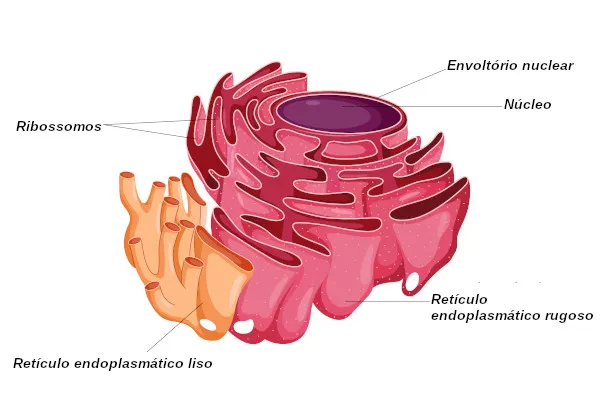

O Retículo Endoplasmático são organelas cujas membranas se dobram formando sacos achatados. Existem 2 tipos de retículo endoplasmático, o liso (agranular) e o rugoso (granular).
A função principal do retículo endoplasmático rugoso (RER) é realizar a síntese proteica e transportar as proteínas até outras partes da célula.
Já o retículo endoplasmático liso (REL) sintetiza lipídeos (gordura) e realiza seu transporte às diversas partes da célula.
O retículo endoplasmático, quando associado aos ribossomos, adquire uma aparência áspera, motivo pelo qual é chamado de rugoso ou granular.
Está localizado no citoplasma, próximo ao núcleo, sendo a sua membrana uma continuação da membrana nuclear externa.

A conexão do RER com o núcleo da célula faz com que a síntese de proteínas seja mais eficiente. Os sinais enviados são rapidamente recebidos pelo núcleo para iniciar o processo de transcrição do DNA.
O Retículo Endoplasmático Liso (REL) não possui ribossomos ligados à membrana, por este motivo recebe o nome de liso ou agranular.
A sua função é, basicamente, participar da produção de lipídios (gordura), especialmente os fosfolipídios, que compõem a membrana plasmática.
No entanto, dependendo do tipo da célula, o REL terá funções diferentes. Como, por exemplo, produzir hormônios esteroides, a partir do colesterol, ou regular os níveis de cálcio do citoplasma de células do tecido muscular estriado.